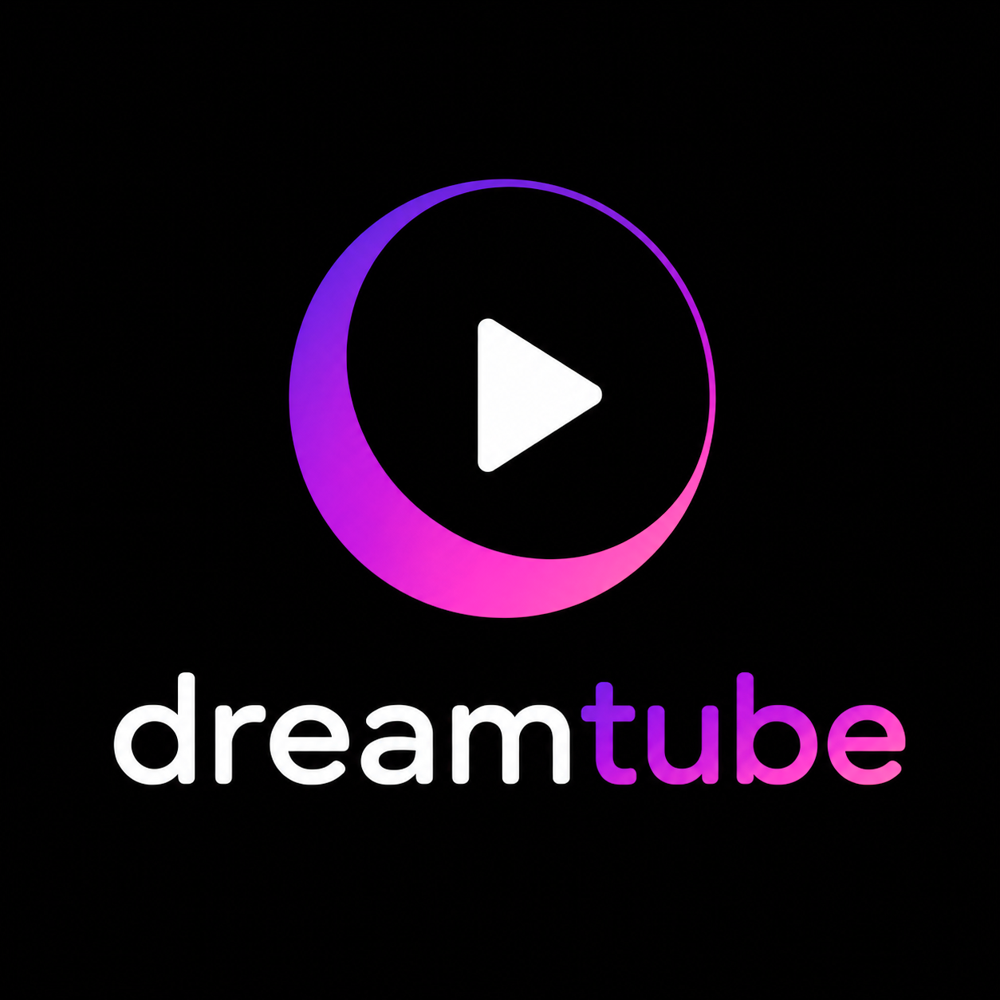

Round 3 after the verdict on round 2: not the candy of the current logo, not the mute of S1 — three blends stepping from one to the other. The two anchors stay for reference, first and last. Colors only, geometry identical, shown on the exact welcome screen. Pick one and it ships as a proper re-exported asset.
Anchor — the live violet→hot-pink mark. Too candy; everything right of here cools it down.

≈25% toward S1 — the hot pink cooled to a rich orchid / magenta-violet. Still vivid and alive, no longer bubblegum.
≈50% — the pink is gone, replaced by a saturated royal purple. The gradient reads violet into purple, still full of color.
≈75% — S1's indigo→violet palette, but a notch brighter and more saturated so it doesn't go flat.
Anchor — round 2's S1 (≈#5b4bc4 → #9d90ff, no pink anywhere). Read as too muted on its own; kept here as the far endpoint.